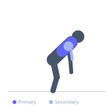
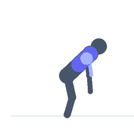

Exercise guide / Ring Row
Ring Row
The ring row is a bodyweight horizontal pulling exercise performed with gymnastic rings suspended at an adjustable height. By walking the feet forward or backward, the difficulty scales dramatically — nearly vertical for beginners, nearly horizontal for advanced trainees. The rings' instability demands significant rotator cuff and scapular stabilizer engagement throughout the pull.
Primary muscles
latissimus dorsi
rhomboid major
Secondary muscles
biceps brachii long head
trapezius middle
deltoid posterior
Stabilizers
infraspinatus
teres minor
transverse abdominis
Equipment
Gymnastic Rings
Optional
Suspension Trainer (TRX-style)


Starting position
- Hang rings at approximately waist to chest height. Grasp a ring in each hand and walk feet forward under the rings until the body is at an angle — the more horizontal the body, the harder the exercise. Arms are extended with the body forming a straight line from head to heels.
Setup
- Secure rings overhead from a pull-up bar, beam, or dedicated rack. Set height based on difficulty level — higher rings create an easier angle. Keep feet flat on the floor or elevated on a box to increase difficulty.
Steps
- Step 1: Begin with arms extended, body in a straight plank position, rings at arm's length.
- Step 2: Keeping the body rigid, retract the scapulae and row the chest up toward the rings.
- Step 3: As you pull, allow the rings to rotate outward naturally and squeeze the chest to the rings.
- Step 4: At the top, the rings should be at chest level and the elbows behind the torso.
- Step 5: Slowly extend the arms and lower back to the starting position, maintaining body rigidity.
Coaching cues
- Your body is a rigid board — nothing bends except the elbows and shoulders
- Think 'chest to rings' not 'chin to rings'
- Rotate the pinkies up as you pull to maximize rear delt and rhomboid contraction
Breathing
- Exhale as you row up. Inhale as you lower.
Range of motion
- Full extension at the bottom to rings touching the chest at the top.
Tempo
- 2-1-3-0 (2s pull, 1s hold, 3s lower)
Common mistakes
- Letting the hips sag — the entire body must stay rigid as a plank
- Pulling the rings to the neck rather than the chest
- Not completing full arm extension at the bottom
Safety
- Verify ring straps and anchor point are rated for your body weight before beginning
- Increase angle gradually — do not attempt a fully horizontal position without sufficient pulling strength
Training
- strength: 5–10 reps
- hypertrophy: 10–15 reps
- endurance: 15–25 reps
- strength: 3–5 sets
- hypertrophy: 3–4 sets
- endurance: 2–3 sets
- Rest: {'strength': 120, 'hypertrophy': 75, 'endurance': 45}